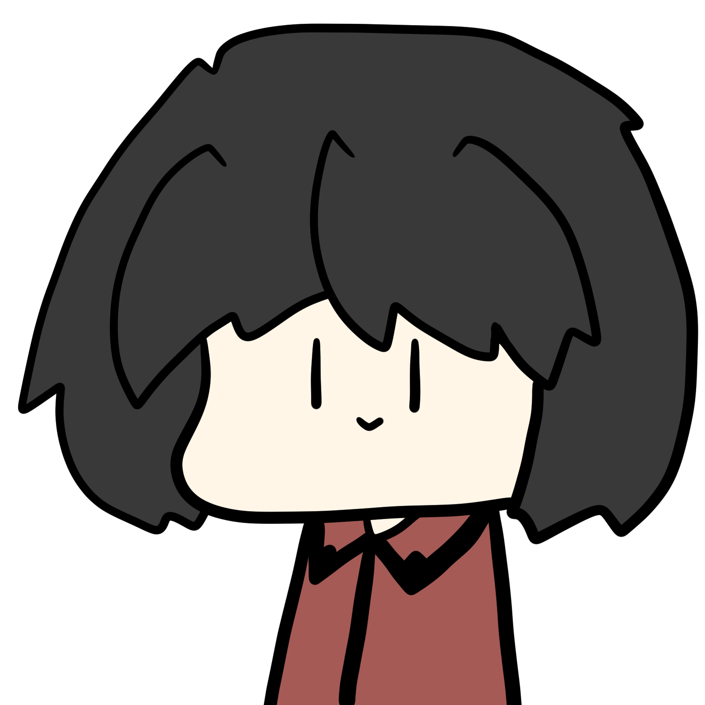
鏡っておもしれ～
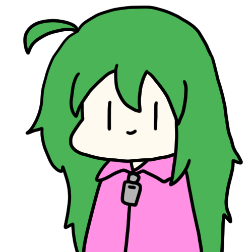
そうでしょうか…？
そうです。
でも左右反転しててキモいですよ？
上下は反転してねえし
それがおもしろいのでは…？
あ、べつに作者は理由を理解してないので
このページ見てもそういう知見は得られませんよ
わかったら帰れ！散れ！散れ！
で、どこから考察していくんです？
こういう感覚的なやつは
いじくりやすい環境を用意するのが
よいとされている(要出典)
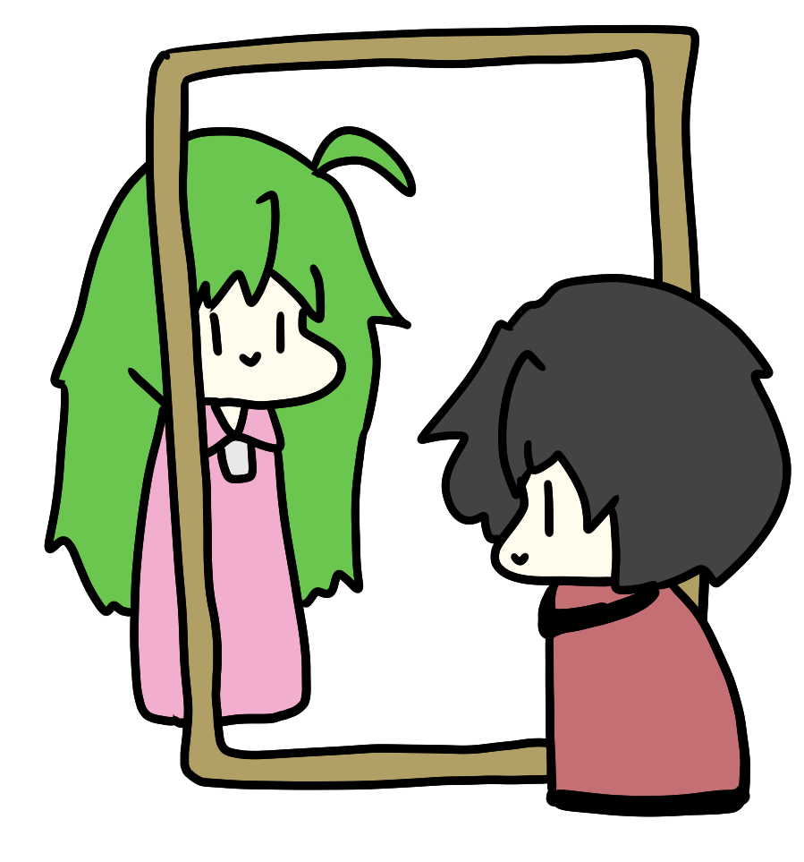
鏡の代わりに枠を用意しました。
こっちから見たら鏡で、そっちから見たら普通です
？？？？？？？？
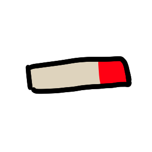
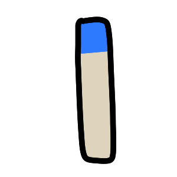
二本の棒を用意し
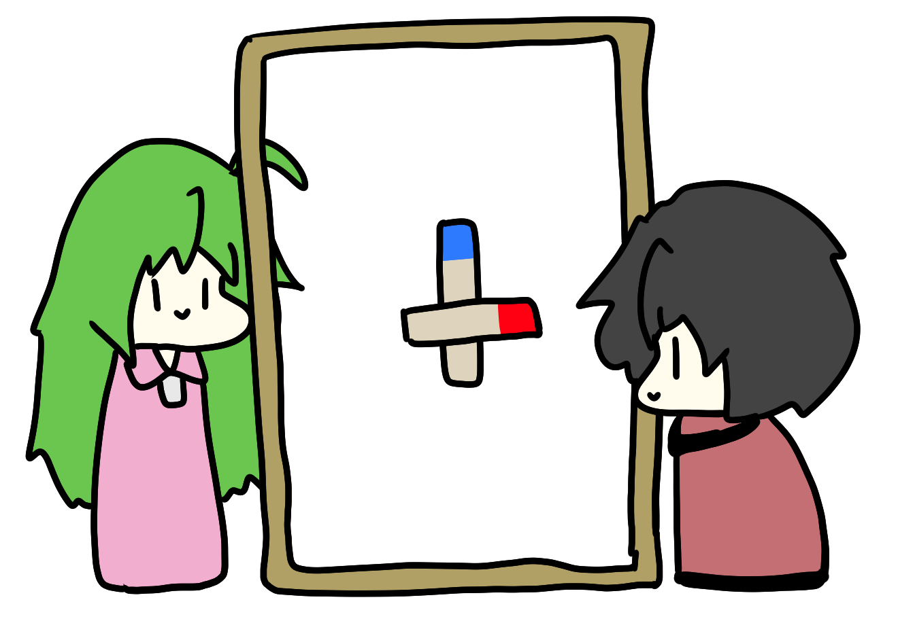
枠の中に置く。
青が上で、赤が右
ああ、なるほど。こちらから見ると青が上で、赤が左ですね
この青をどうにかこうにか逆にしてやりたいですな
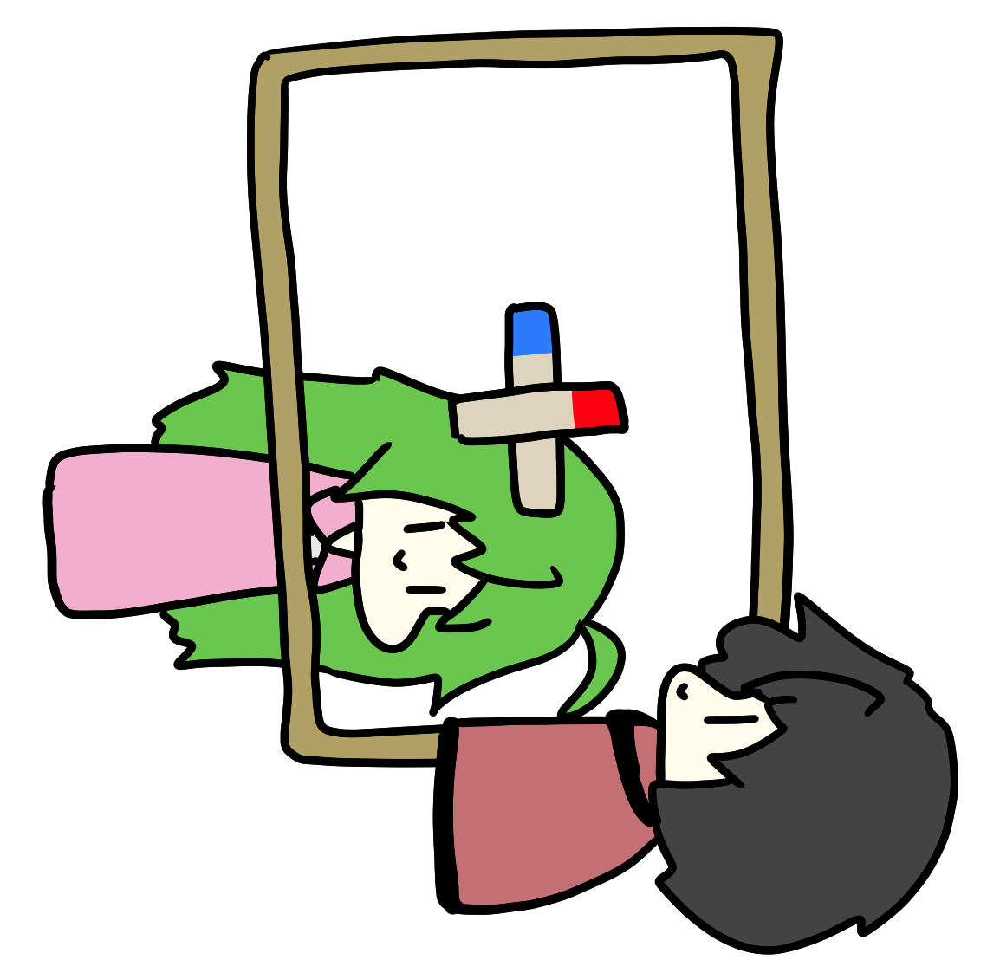
寝れば青がお互いの認識で逆になるのだ
いや、
これ上下が赤になって左右が青になっただけじゃないですか？
そ…そんな…
上下とは重力方向ではなく肉体方向によって定義されるってこと！？
ということは鏡に垂直な軸で回転しても意味ねえな
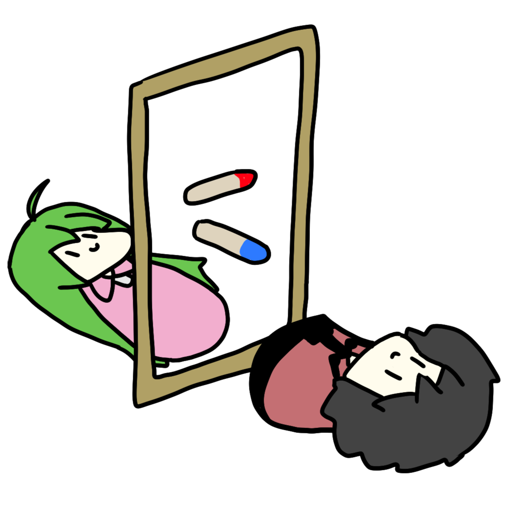
これでどーよ！？
青が上！
お、青が下ですね。赤も左いっちゃってますが
次は赤を合わせますか
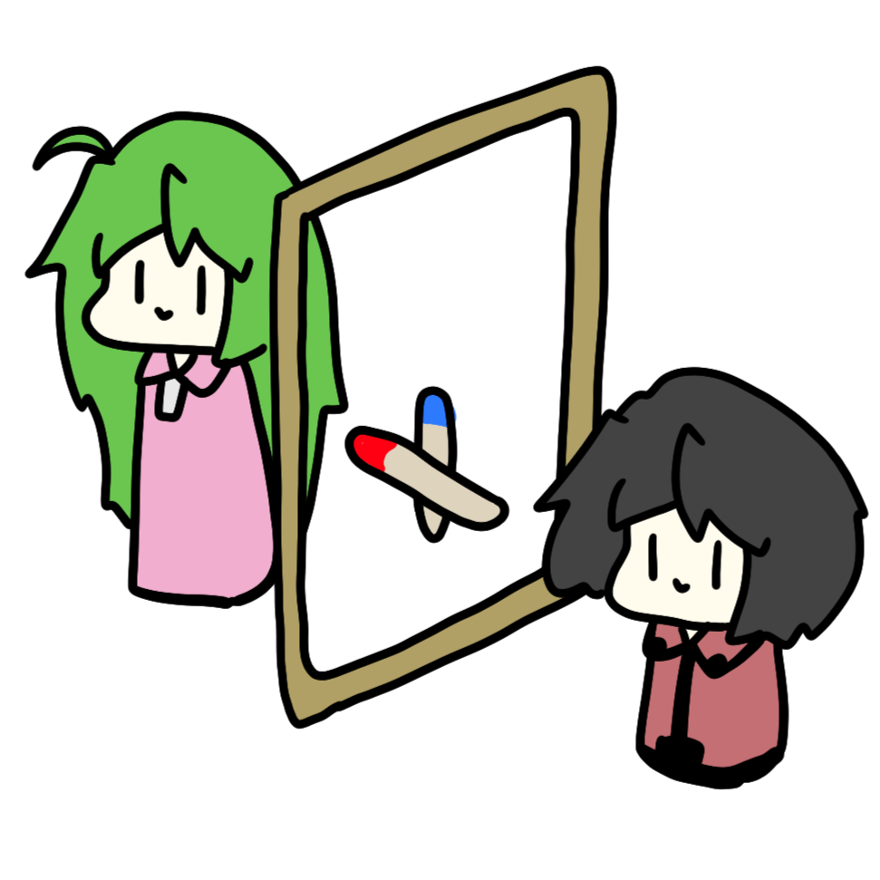
残るはこっち向きだな
赤が右…あれ？これ上下もあってる？
これ確かに赤が右ですけど…こっちから見ると”手前”ですね
”手前”…？
そっちから見たら”奥”なんじゃないですか？
”奥”…？
もしかしてこの枠-棒モデル間違ってる！？
そうなります（笑）
あばばばばばばｂ
だいたい、”手前”と”奥”ってなんだよ
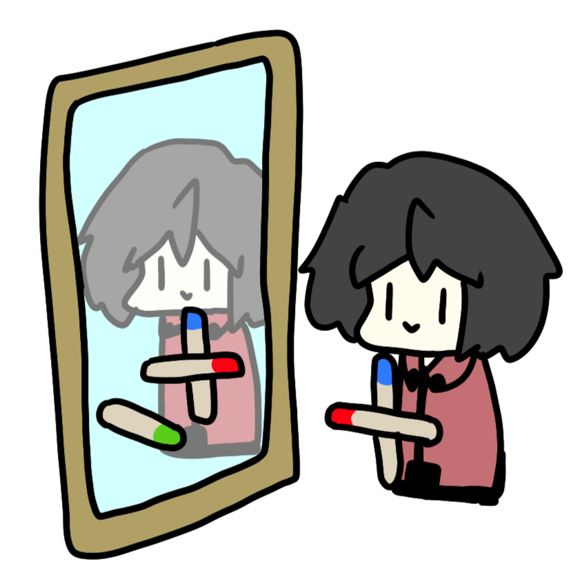
緑くんは鏡にくっついた向きなのか？
鏡にくっついてるなら、こいつってどういう見かたをしても常に逆ですね
なんだよ常に同じ挙動なら興味ねーよ、消えろ！
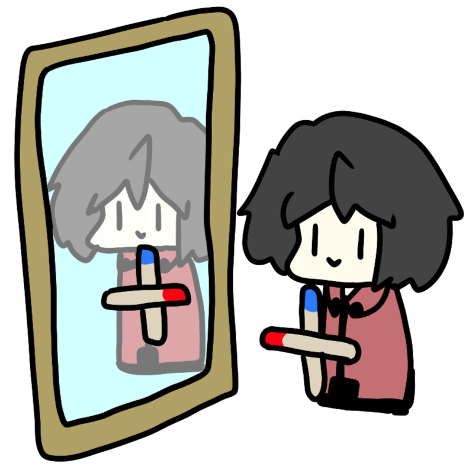
やっぱこれだね
しかし、実際に鏡を見てみるとやっぱ左右だけ逆でキモいですね
もはやアレだな、左右逆じゃないんじゃないか？という気持ちにさえなってきたな。目の錯覚なんだろ？
逆ですけど
騙されません。しゅうくんがガキだからってだませると思ったら大間違いです
じゃあ鏡の裏側にまわってみて、比べてくださいよ
…
…
ドドドド
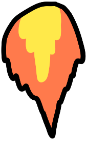
！！？！？
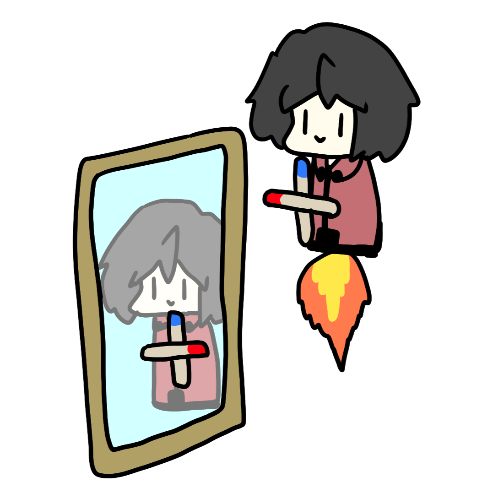
飛んだ…
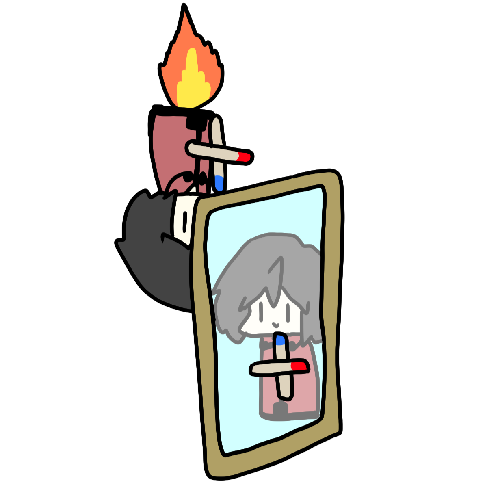
まわりこんだけど…ね？（笑）
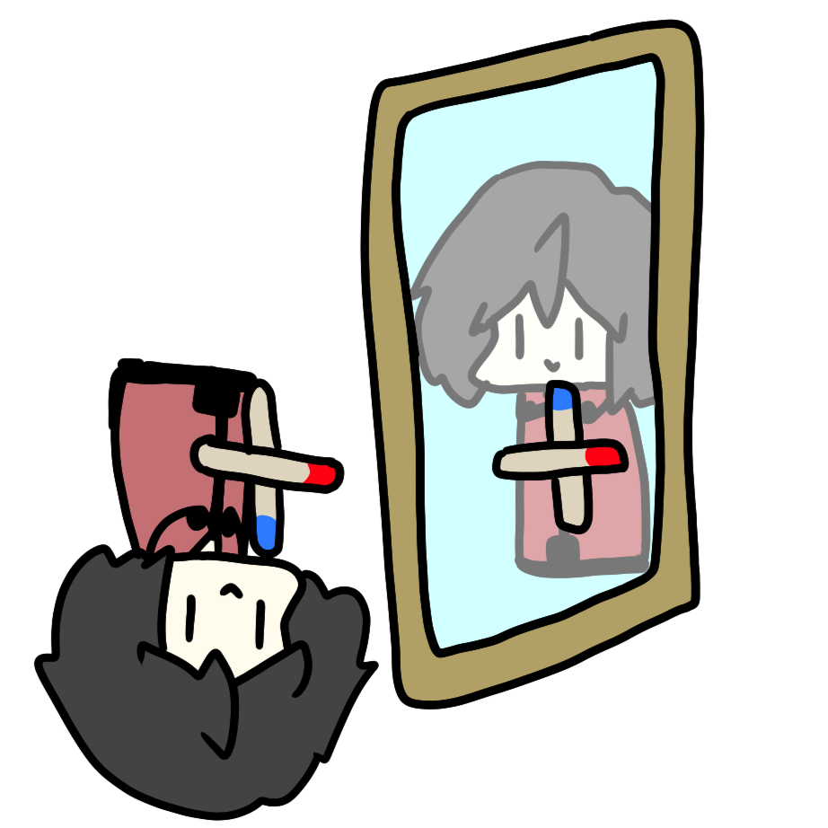
あれ？これ本当に左右逆じゃなくね？
もしかして横から回り込んで想像すると左右逆になって、
上下から回り込んだ想像をすると上下が逆になるんですかね？
じゃあ、解決ってことで…
…はい。